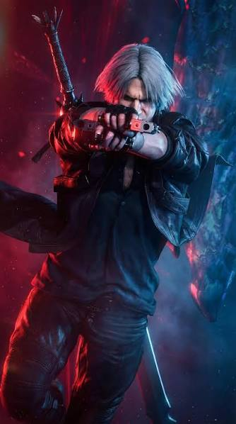
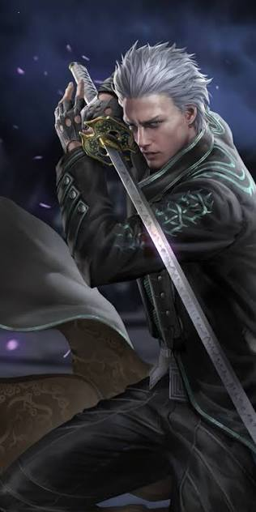
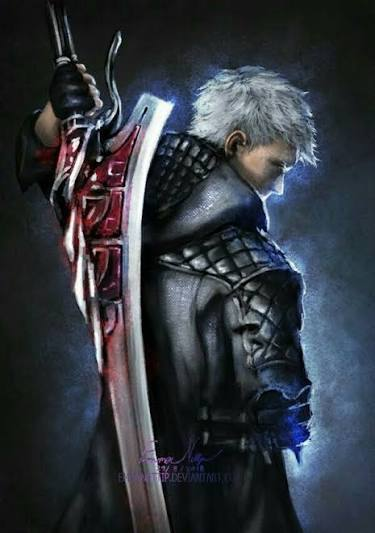

La historia de los hijos de Sparda
Personajes encontrados: 3
No se encontraron personajes.

Un cazador de demonios, hijo de Sparda.
Dante utiliza la espada de Rebelion y las pistolas Ebony e Ivory.

Hermano de Dante, el Demonio Urizen
Vergil usa la katana Yamato, que es capar de abrir portales entre el inframundo y el mundo humano, tambien puede separar al humano del demonio en su interior.

Hijo de Vergil y sobrino de Dante. Es un joven cazador de demonios.
Nero usa la espada Yamato como un brazo demoniaco, pierde a Yamato en su enfrentamiento contra Vergil y ahora usa su brazos mecanicos de alta tecnologia.
Devil May Cry es la historia de los hermanos, separados por la tragedia, cuando eran niños un demonio mato a su madre y ambos fueron separados. Dante se quedo en el mundo de los humanos y se convirtio en un cazademonios amante de las pizzas.
Su hermano Vergil, esta obsesionado por el poder, separo su parte humana de su parte demoniaca , naciendo el demonio Urizen y V.
Dante y Vergil son hijos de Sparda, un poderoso demonio que decidio proteger a la humanidad. Ambos hermanos eligieron caminos diferentes